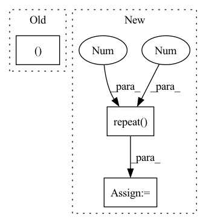

Pattern ID :2156
Before Change
if indivisual_attn:
attn = attn.view(n_head, sz_b, len_q, len_k)
return output, attn
class ScaledDotProductAttention(nn.Module):
def __init__(self, temperature):After Change
if mapping_mask is not None:
mapping_mask = mapping_mask.repeat(n_head, 1, 1) // (n*b) x .. x ..
if attn_prior is not None:
attn_prior = attn_prior.repeat( n_head, 1 , 1 )
output, attns, attn_logprob = self.attention(
q, k, v, key_mask=key_mask, query_mask=query_mask, mapping_mask=mapping_mask, attn_prior=attn_prior)
output = output.view(n_head, sz_b, len_q, d_v)In pattern: SUPERPATTERN
Frequency: 4
Non-data size: 3
Instances Fragment ID: 7633044
Project Name: keonlee9420/portaspeech
Commit Name: 814cdda1ebf7dc626708db2bcf20fdb9207f4345
Time: 2022-02-13
Author: keonlee9420@gmail.com
File Name: model/blocks.py
M Class Name: WordToPhonemeAttention
N Class Name: WordToPhonemeAttention
M Method Name: forward(9)
N Method Name: forward(8)
M Parent Class: nn.Module
N Parent Class: nn.Module
M File Name: model/blocks.py
N File Name: model/blocks.py
M Start Line: 584
M End Line: 599
N Start Line: 558
N End Line: 602
Before Change
def forward(self, content_code, class_code):
batch_size = content_code.shape[0]
content_code = content_code.view((batch_size, -1, 4, 4 ))
if self.training and self.config["content_std"] != 0:
noise = torch.zeros_like(content_code)
noise.normal_(mean=0, std=self.config["content_std"])After Change
def forward(self, content_codes, class_codes):
styles = torch.cat((content_codes, class_codes), dim=1)
latent = styles.unsqueeze(dim=1).repeat(1 , self.n_latent, 1 )
// latent = styles.view((-1, self.n_latent, 512))
out = self.input(latent)
out = self.conv1(out, latent[:, 0])
skip = self.to_rgb1(out, latent[:, 1])
i = 1
for conv1, conv2, to_rgb in zip(self.convs[::2], self.convs[1::2], self.to_rgbs):
out = conv1(out, latent[:, i])
out = conv2(out, latent[:, i + 1])
skip = to_rgb(out, latent[:, i + 2], skip)
i += 2 Fragment ID: 7633045
Project Name: avivga/overlord
Commit Name: b0f943171d9586ee561baa9a794cfcd4fe07b753
Time: 2020-08-17
Author: avivga@gmail.com
File Name: network/modules.py
M Class Name: Generator
N Class Name: Generator
M Method Name: forward(3)
N Method Name: forward(3)
M Parent Class: nn.Module
N Parent Class: nn.Module
M File Name: network/modules.py
N File Name: network/modules.py
M Start Line: 42
M End Line: 57
N Start Line: 67
N End Line: 85
Before Change
// TODO: try residual connection
logits = self.out(torch.cat((text_attn_feature, visual_attn_feature, audio_attn_feature ), dim=1))
return logits
After Change
output_text, _ = self.RNNs[0](X_text)
output_text = output_text[:, -1, :]
text_emo_vecs_origin = self.textEmoEmbs(torch.LongTensor(list(range(self.num_classes))).to(self.device))
text_emo_vecs = text_emo_vecs_origin.unsqueeze(0).repeat( batch_size, 1 , 1 )
text_attn_weights = self.attention(output_text, text_emo_vecs)
logits = text_attn_weights if logits is None else logits + text_attn_weights
if "a" in self.modalities: Fragment ID: 7633062
Project Name: wenliangdai/modality-transferable-mer
Commit Name: b0e565d11d6b3bf9f65fb1dcbdc8c641a2bc8054
Time: 2020-06-10
Author: wenliang.dai.1995@gmail.com
File Name: src/models/temp.py
M Class Name: EmotionEmbAttnModel
N Class Name: EmotionEmbAttnModel
M Method Name: forward(4)
N Method Name: forward(4)
M Parent Class: nn.Module
N Parent Class: nn.Module
M File Name: src/models/temp.py
N File Name: src/models/temp.py
M Start Line: 53
M End Line: 79
N Start Line: 70
N End Line: 96
Before Change
block_forecasts = torch.stack(block_forecasts)
block_forecasts = block_forecasts.permute(1, 0, 2)
return forecast, block_forecasts
After Change
// encoder_mask = encoder_mask.flip(dims=(-1,))
encoder_mask = encoder_mask.unsqueeze(-1)
level = encoder_y[:, -1:].repeat(1 , decoder_x_t.size(1), 1 ) // Level with Naive1
block_forecasts = [level]
block_backcasts = [encoder_y[:, -1:].repeat(1, encoder_y.size(1), 1)]
forecast = level Fragment ID: 7633052
Project Name: jdb78/pytorch-forecasting
Commit Name: a60fea51988c95548f47dd9fb76fa57258201160
Time: 2022-03-20
Author: beitner.jan@bcg.com
File Name: pytorch_forecasting/models/nhits/sub_modules.py
M Class Name: NHiTS
N Class Name: NHiTS
M Method Name: forward(6)
N Method Name: forward(6)
M Parent Class: nn.Module
N Parent Class: nn.Module
M File Name: pytorch_forecasting/models/nhits/sub_modules.py
N File Name: pytorch_forecasting/models/nhits/sub_modules.py
M Start Line: 343
M End Line: 363
N Start Line: 353
N End Line: 379